Released on April 9, 2008
(Next Release on April 16, 2008)
Where Have All the Drivers Gone?
Does it seem like there are fewer cars on the highway this year? The recent trend in motor gasoline consumption would appear to indicate so. Gasoline consumption has been declining for at least six months. Households may be thinking twice about jumping in the family car as a slowing economy and rising prices are stressing pocketbooks from Maine to Hawaii.
During the first half of 2007, motor gasoline consumption was up by 0.9 percent compared with the same period the previous year. But, during the second half of 2007, gasoline consumption declined by 0.1 percent from the year before. In fact, fourth-quarter consumption fell by 0.4 percent. The drop in gasoline consumption, the first since the recession of 2000, should come as no surprise with the slowing economy and soaring gasoline prices.
The first quarter of 2008 continued to show an even sharper decline in consumption of 0.6 percent compared to the same period in 2007. Real personal disposable income rose only an estimated 0.9 percent in the first quarter and regular grade gasoline retail prices rose an estimated 32 percent (from an average $2.36 per gallon a year ago to an average $3.11 per gallon this year).
In EIA’s April Short-Term Energy Outlook, motor gasoline consumption this summer (April through September) is projected to average 9.40 million barrels per day (bbl/d), down 0.4 percent from that of the previous summer. Adjusting for the reduced Btu content of the growing ethanol share of the motor gasoline pool, the year-to-year decline would be closer to 0.9 percent. Regular retail prices are projected to average $3.54 per gallon, up from $2.93 per gallon last summer. The temporary boost to real disposable personal income from the upcoming economic stimulus payments, which are expected to increase year-over-year growth in real disposable personal income to 4.1 percent during the second quarter of 2008, is not expected to have a significant impact on gasoline consumption.
The weakness in gasoline consumption is expected to continue, even as the economy recovers from the current slowdown and prices begin to stabilize and even fall. For 2008 as a whole, motor gasoline consumption is projected to decline by 0.3 percent. For 2009, gasoline consumption is projected to rise by only 0.9 percent, even with the prospects of economic recovery and declining prices.
Along with the Short-Term Energy Outlook, EIA released a report entitled Motor Gasoline Gasoline Consumption 2008: A Historical Perspective and Short-Term Projections, which shows the growth in gasoline consumption has been slowing for the last couple of decades (Figure 1). In fact, the period of solid, robust growth in automobile travel ended 10 years ago, when a structural change in the motor gasoline markets took place. Prior to 1997, growth in highway travel generally corresponded to that of real disposable income for much of the post-war period. Although there were downturns brought about by recessions and/or spikes in prices, these dips were reversed when the economy recovered and/or prices ebbed.
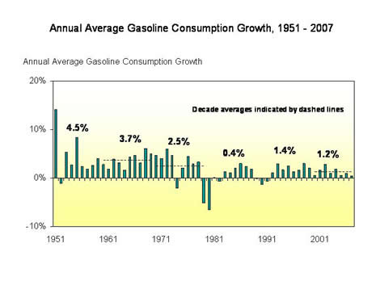
Since 1997, the average growth rate in highway travel has been less than half that of income. This shift occurred despite the fact that, on a per-mile basis, fuel costs were low for much of this period. Highway travel has become a mature market brought about by demographic shifts that are expected to continue to slow its growth.
For the near future, demographic shifts, the impact of high prices on consumers’ decisions to purchase more fuel-efficient cars, and the more recent shift characterized by the reduced impact of income on total vehicle miles traveled are likely to keep growth in gasoline consumption well below that seen for much of the post-war period. As the economy recovers, the cars will return to the highways in ever greater numbers as population continues to grow by about 1 percent a year.
U.S. Gasoline Prices Continue to New Record Highs; Diesel Prices Move Up in West
For the second week in a row, the U.S. average retail price for regular gasoline moved higher, setting another all-time record of 333.2 cents per gallon. The price increased by 4.2 cents, 53.0 cents higher than the price a year ago. Prices increased in every region of the country. The average price on the East Coast went up by 2.8 cents to 328.4 cents per gallon, 52.9 cents higher than the price last year. The price in the Midwest increased by a nickel to 329.9 cents per gallon, up by 55.5 cents from a year earlier. The average price in the Gulf Coast region increased 4.7 cents to 325.3 cents per gallon, 57.8 cents above the price a year ago. The average price in the Rocky Mountains increased to 326.7 cents per gallon, up 3.5 cents from last week and some 54.8 cents higher than last year. Not only did the average price on the West Coast remain the highest of any region in the country, the price increase there was the largest of the five regions, increasing by 5.5 cents to 357.8 cents per gallon, 44.0 cents higher than a year ago. The average price in California increased even more, jumping up by 7.7 cents to reach 368.5 cents per gallon, 43.3 cents above the price last year.
Although the U.S. average retail diesel price went down for the second week in a row, the amount of the drop was less than for the previous week, 0.9 cent compared to a drop of 2.5 cents the week before. The price of 395.5 cents per gallon was 111.5 cents higher than the price at the same time last year. On a regional basis, the average price for the East Coast went down 0.9 cent to 400.5 cents per gallon, 119.2 cents per gallon higher than the price a year ago. In the Midwest, the price dropped by 1.2 cents to 391.7 cents per gallon, 108.2 cents higher than a year ago. The price in the Gulf Coast went down 1.3 cents to 389.4 cents per gallon, remaining the lowest price of any region. Prices in the western regions increased slightly. In the Rocky Mountain region the price moved up by 0.2 cent to 397.4 cents per gallon, 102.3 cents over a year earlier. On the West Coast, the average price increased by 0.3 cent to 405.2 cents per gallon, 113.1 cents above the price last year. The average price in California went up by 0.6 cent, to 411.8 cents per gallon, 114.0 cents higher than the price a year ago.
Propane Inventories Post Modest Gain
The first week of the traditional build season (April through September) saw total propane inventories post a modest 0.4 million-barrel gain last week, raising the Nation’s primary supply of propane up to an estimated 25.3 million barrels as of April 4, 2008. Regionally, inventories rose in the Midwest and Gulf Coast areas with respective gains of 0.5 million barrels and 0.2 million barrels. At the same time, inventories in the East Coast and Rocky Mountain/West Coast regions reported similar declines of 0.2 million barrels. Propylene non-fuel use inventories remained relatively unchanged last week at 2.0 million barrels, although the share slipped to 7.9 percent of total propane/propylene inventories compared with the prior week’s 8.1 percent.
Text from the previous editions of “This Week In Petroleum” is now accessible through a link at the top right-hand corner of this page.
| Retail Prices (Cents Per Gallon) | |||||||
| 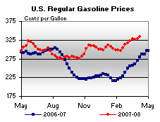 | 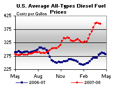 | ||||||
| Retail Data | Changes From | Retail Data | Changes From | ||||
| 04/07/08 | Week | Year | 04/07/08 | Week | Year | ||
| Gasoline | 333.2 | Diesel Fuel | 395.5 | ||||
| Spot Prices (Cents Per Gallon) | |||||||||||||||||||||||||||||||||||||||
| 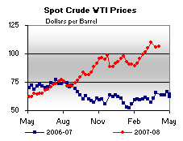 | 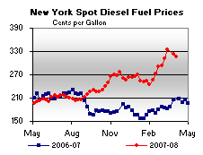 | ||||||||||||||||||||||||||||||||||||||
| 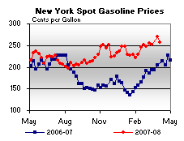 | 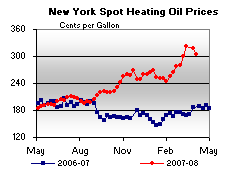 | ||||||||||||||||||||||||||||||||||||||
|
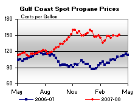 | ||||||||||||||||||||||||||||||||||||||
| Stocks (Million Barrels) | |||||||
| 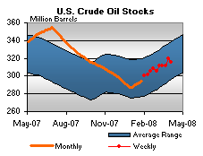 | 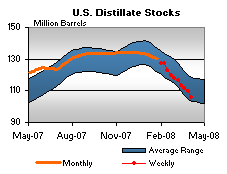 | ||||||
| 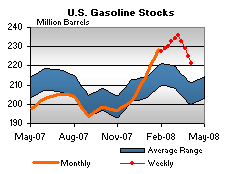 | 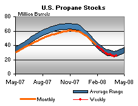 | ||||||
| Stocks Data | Changes From | Stocks Data | Changes From | ||||
| 04/04/08 | Week | Year | 04/04/08 | Week | Year | ||
| Crude Oil | 316.0 | Distillate | 106.0 | ||||
| Gasoline | 221.3 | Propane | 25.250 | ||||